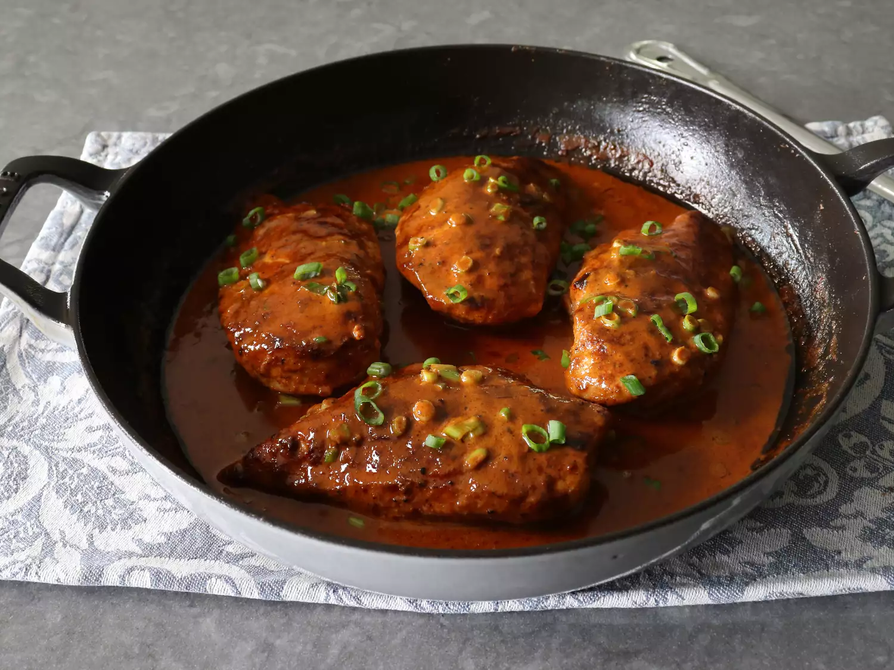

Chicken Lazone

Description
Creamy, Cajun-spiced Chicken Lazone is incredibly delicious, and seems fancy, but needs almost no prep at all. Adapted from the famous New Orleans dish by Chef Lazone Randolph of Brennan's, it may be one of the easiest chicken dishes we've ever posted.
Ingredients
- 1 1/2 teaspoons chili powder
- 1 1/2 teaspoons smoked paprika
- 1/4 teaspoon cayenne pepper
- 1/2 teaspoon freshly ground black pepper
- 2 teaspoons garlic powder
- 1 1/2 teaspoons onion powder
- 4 skinless, boneless chicken breasts
- 1 1/2 teaspoons kosher salt, or to taste
- 1 tablespoon vegetable oil
- 1/2 lemon, juiced
- 2/3 cup heavy cream
- 1/3 cup water
- 1/4 cup sliced green onions
- 1 tablespoon cold butter, cubed
Steps
- Mix chili powder, smoked paprika, cayenne, black pepper, garlic powder, and onion powder together in a small bowl; set aside. Half will be used for the chicken rub and half for the sauce.
- Season chicken on both sides with salt. Sprinkle half the spice mixture over both sides of chicken. Wrap and refrigerate for 1 hour (or up to overnight), or until ready to cook
- Heat oil in a heavy-duty nonstick pan over medium-high heat. Sear chicken, turning once, about 3 to 4 minutes per side; chicken will be about 75% cooked at this point, and will finish cooking in the sauce. Turn off heat; transfer chicken to a plate and set aside.
- Add remaining spice mixture to the pan and stir around in the hot oil for 30 seconds. Add lemon juice, cream, and water. Stir in a pinch of salt.
- Bring to a simmer over medium-high heat, stirring occasionally. Reduce to medium-low and return chicken to the pan along with any accumulated juices. Simmer gently, turning occasionally to coat with sauce, until chicken is no longer pink at the center and juices run clear, 8 to 10 minutes. Time will vary based on size of chicken breasts. An instant-read thermometer inserted near the center will read 165 degrees F (74 degrees C).
- Reduce heat to low and add green onions and butter. Stir into the sauce, while also basting chicken with the sauce. Taste for seasoning and serve.
Home